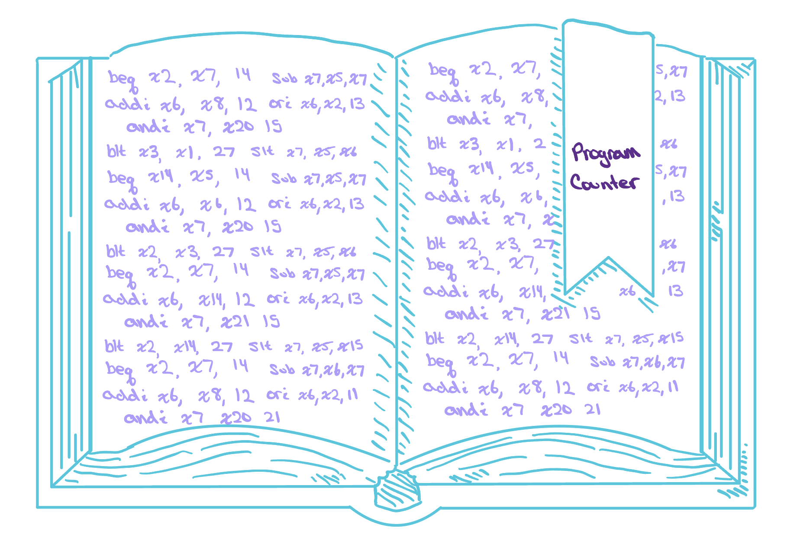
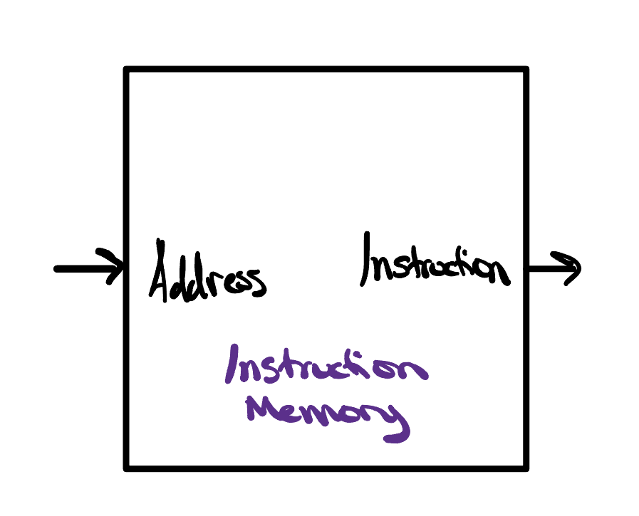
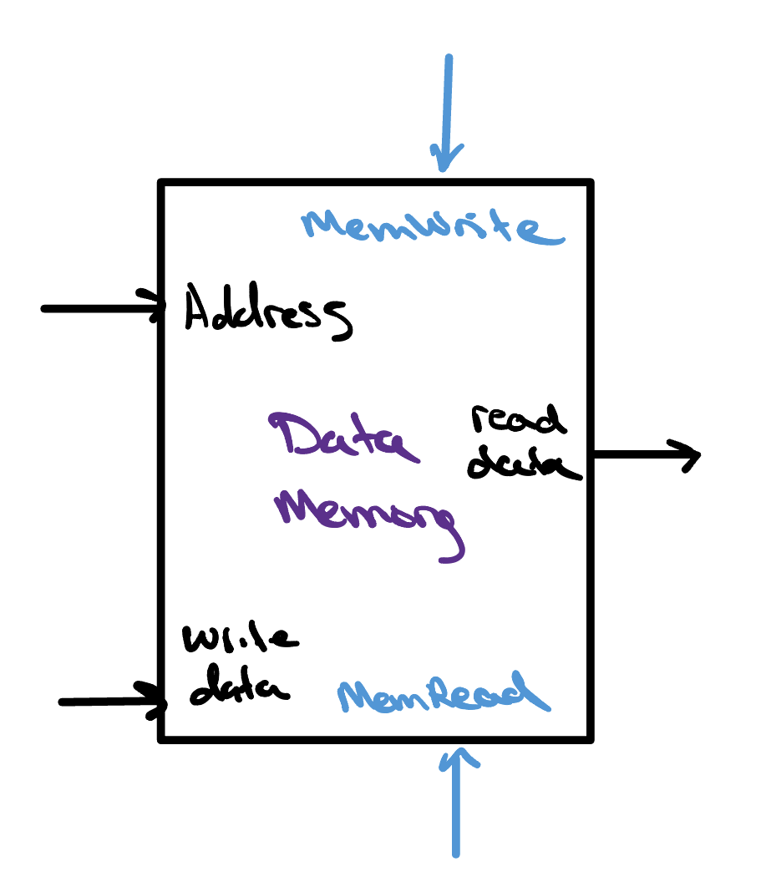
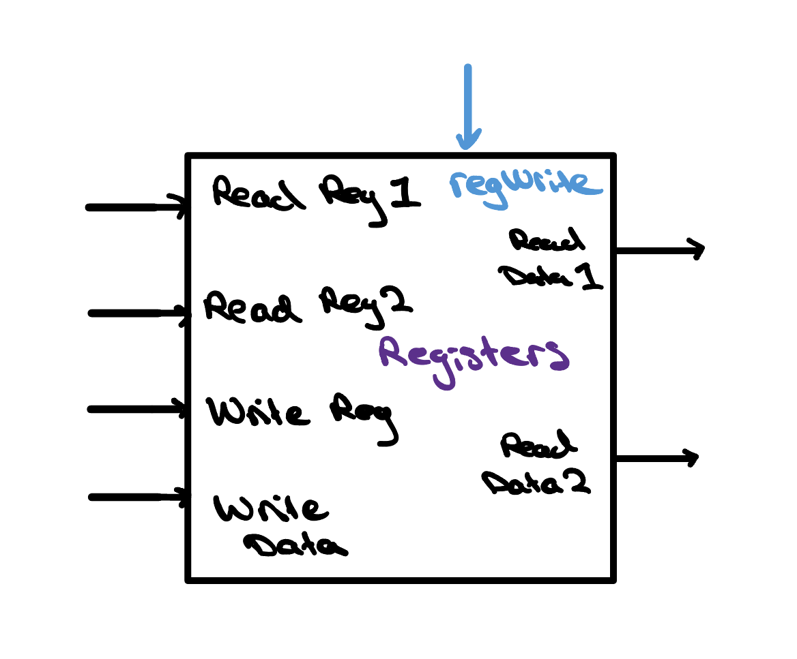
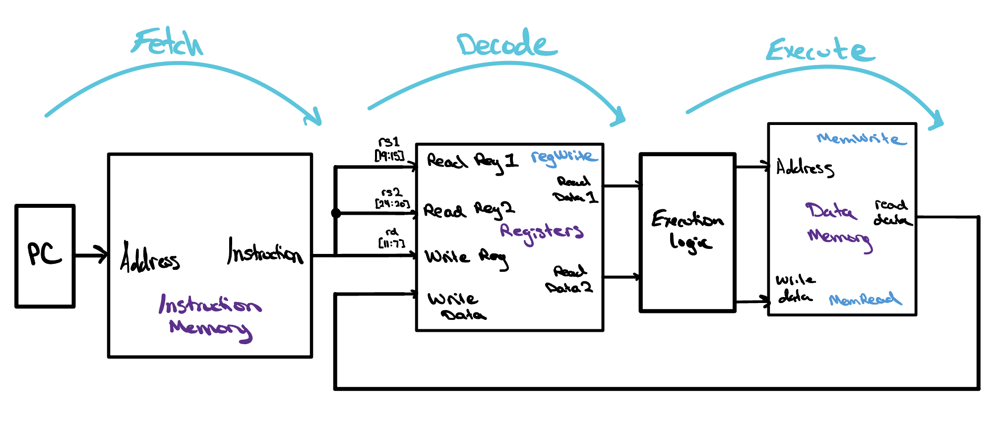
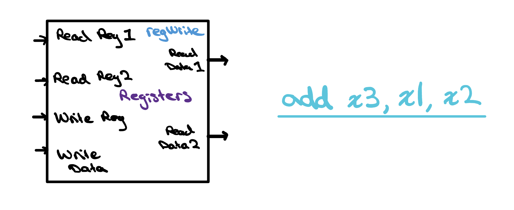

Fetch, Decode, Execute
Now that a program lives in memory as a stream of encoded instructions, how does the processor actually run them? It follows one simple, endless loop: fetch the next instruction from memory, decode it to work out what it commands, and execute it. This fetch-decode-execute cycle is the heartbeat of every CPU, repeating billions of times a second.

The CPU’s Bookmark

Ok, so we have all these instructions at the ready for our CPU to run. Some may be arithmetic, some branches, some data transfers — a whole mix of orders waiting their turn. Each of these instructions is like a word on a page, each page like a unique task, and the book as a whole like a specific program our processor must read through and run from cover to cover. But a book is only useful if you can find where you left off. With a modern processor tearing through billions of instructions every second, we need somewhere to keep our place.
Along the very same lines as our analogy, the program counter — often shortened to the PC — was developed to be exactly that bookmark. It is a small, dedicated register that holds the memory address of the next instruction the CPU is about to read. At the start of every cycle, the processor looks at the program counter to know precisely which instruction to grab from memory, so it never loses its place in the book.
Once the CPU has an instruction in hand, the program counter needs to move on to the next one. Because every RISC-V instruction is exactly 32-bits, or 4 bytes, the CPU normally just adds 4 to the program counter, nudging our bookmark forward. The exception is when an instruction wants to jump somewhere else in the book entirely, like a branch or a jump; in that case the program counter is loaded with a brand-new address instead of the usual + 4, and our story picks up from there.
Instruction and Data Memories

By now you might be wondering where all of these instructions actually live inside the processor, or what the program counter is even pointing at in the first place. Easily enough, the instructions live in a dedicated piece of hardware called the instruction memory. The instruction memory is exactly what it sounds like: a block of memory that holds our program as one long list of encoded instructions, each sitting at its own address. The program counter holds one of those addresses, and on every cycle the processor uses it to look up the matching instruction and hand it off to the rest of the CPU.
Notice, too, that unlike the data memory we build next, the
instruction memory has no control signals guarding it. There is no
readEnable that has to be switched on
before it will hand back an instruction, and there is no
clk edge it has to wait for either. It
simply presents whatever instruction lives at the address the
program counter gives it, the instant that address arrives —
the read is purely combinational. That is exactly the
behavior we want here: the processor needs a fresh instruction on
every single cycle, so there is never a reason to hold one
back or make it wait. Play around with the code on the back of the
provided card to see how it works!

But a program is not just a list of orders — it also needs somewhere to keep the values it works on. That job falls to a second piece of hardware called the data memory. Whenever we run a load word (lw) instruction, the CPU reaches into the data memory and copies a value out into a register; whenever we run a store word (sw) instruction, it does the reverse, writing a register’s value back into the data memory. In short, the instruction memory holds what to do, while the data memory holds what to do it to. Flip the card to read its Verilog, then drive the signals on the back.
In this project, we will actually keep these two memories completely separate — one dedicated instruction memory and one dedicated data memory, each with its own connections into the datapath. Splitting them apart like this is known as the Harvard architecture, named after early computers that stored their instructions and data in separate places. It keeps our single-cycle design simple: the processor can read the next instruction and read or write a data value in the very same cycle, without the two ever getting in each other’s way.
Register Files
We have seen instructions name registers over and over — add x8, x6, x7 reads x6 and x7 and writes x8 — but where do those registers actually live? They sit together in a small, fast bank of storage inside the processor called the register file. RISC-V gives us 32 general-purpose registers, x0 through x31, and the register file is simply the hardware that holds all of them in one place, right next to the ALU where the work gets done.
Notice that this register file has two read ports
— two separate read-address inputs feeding two separate
outputs. That is exactly what an instruction needs: an R-type instruction
names two source registers, rs1 and
rs2, and having two read ports lets the
hardware fetch both of their values at once, in a
single clock cycle. We also hardwire x0 to
zero: it always reads back 0 and ignores any write.
Giving up one register is well worth it, because a guaranteed 0 is
remarkably handy — it lets a single instruction copy a
register, load a small constant (addi x5, x0, 8), or throw
a result away.
And just like the data memory, only writing is
guarded. A write lands only on a clk
edge while writeEnable is high (and
never to x0), but reading is always live
— data1 and data2 present their
registers’ values continuously, no matter what the control
signals are doing, so both operands are ready the moment the
processor needs them. Flip the card to see how it all comes together
in Verilog.

Putting It All Together
We now have all the hardware we need: the program counter to keep our place, the instruction memory holding the program, the register file holding our 32 registers, the data memory holding the values a program works on, and the ALU we built earlier ready to do the math. On its own, each of these is just a box. Wired together, they carry out the fetch-decode-execute cycle — the loop the processor runs for every single instruction.
The diagram below traces a single trip around that loop. It begins at the program counter, which points into the instruction memory to fetch the next instruction before stepping forward, ready for the one after. That instruction is then decoded into its fields, and its source-register numbers are handed to the register file so both operand values appear at once. Finally, in the execute step, those values flow into the ALU and the result goes wherever the instruction asks — back into the register file, out to or in from the data memory, or into the program counter for a branch — before the cycle starts over with the next fetch, billions of times a second.

Check Yourself
In the register file, a write only lands on a clk edge, but a read is always live — data1 and data2 present their registers’ values continuously. For a single instruction like add x3, x1, x2, why do the reads have to stay continuous instead of waiting for a clock edge the way the write does?
